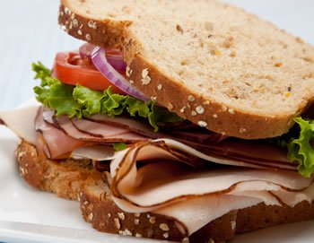
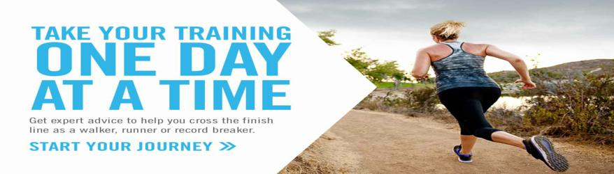
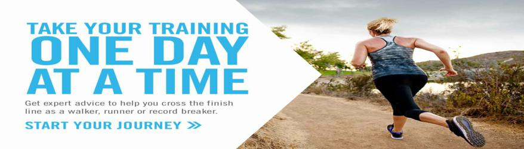

The American College of Sports Medicine reports that you can elevate your metabolism for up to 24 hours post-exercise by adding just one little twist to your exercise routine: intervals. All you have to do is inject brief periods of intense effort into your regular walks (or runs, swims, bicycling, elliptical sessions, etc). The intensity effectively resets your metabolism to a slightly higher rate during your workout, and it takes hours for it to slow down again. That equals ongoing calorie burn long after you've showered and toweled off.
Push-Up
Crunch(abdomen)
Curl(Biscep)
Healthy Meal Plan to lose Weight and get into shape
THIS 5-DAY SAMPLE MEAL PLAN FOR WEIGHT LOSS IS ALL ABOUT EATING MORE, NOT LESS.
Breakfast
Oatmeal with Fresh or Frozen (No Sugar Added) Fruit
Tea or Coffee
Mid-Morning Snack (enjoy only if hungry)
Veggie-Salsa Tortilla
1 Navel Orange or 2 Tangerines
Lunch
2 Cups Mixed Greens with 1 Cup of Other Veggies, Chopped, Dressed with Aged Balsamic Vinegar
Hearty Italian-Style White Bean Soup
Mid-Afternoon Snack (enjoy only if hungry)
6 Ounces of Nonfat Plain or No-Sugar-Added Yogurt with Your Choice of Berries Swirled Throughout
1 Apple
Dinner
Salad
Mustard Coated Salmon (3½ to 4 ounces)
Baked Potato with 2 Tablespoons Fat-Free Sour Cream and a Sprinkling of Chives or Scallions
Breakfast
Egg White Omelet
Hash Browns
Bowl of Blueberries,Fresh or Frozen(No Sugar Added)
Tea or Hot Cocoa,if desired
Big Handful of Grapes
Lunch
Salad
Turkey Sandwich
Sandwich of fresh roasted turkey breast (3½ to 4 ounces)
Mid-Afternoon Snack (enjoy only if hungry)
Pear
Popcorn – air-popped or fat-free microwave
Dinner
Veggie Burger on a Whole-Wheat Bun with Roasted Red Bell Peppers
Steamed Fresh Vegetables
Breakfast
Hot Whole-Grain Cereal with Blueberrie
Tea or Coffee
Mid-Morning Snack (enjoy only if hungry)
1 Cup Diced Watermelon or Other Seasonal Fresh Fruit
1 Snack Bag of Baby Carrots
Lunch
Vegetarian Chili
1 Ear of Corn
Mid-Afternoon Snack (enjoy only if hungry)
Cottage Cheese and Fruit
1 Apple
Dinner
Spinach Salad
Chicken with Cherry Tomatoes
Brown Rice

Breakfast
1 Cup Fresh Fruit
Tea or Coffee
1 Cup Nonfat Plain or Nonfat, No-Sugar-Added Yogurt
Mid-Morning Snack (enjoy only if hungry)
1 to 2 Cups of Veggie-Rich, Bean-Rich Low-Sodium Soup, such as…
Red Bean and Leftover Veggie Soup
 
